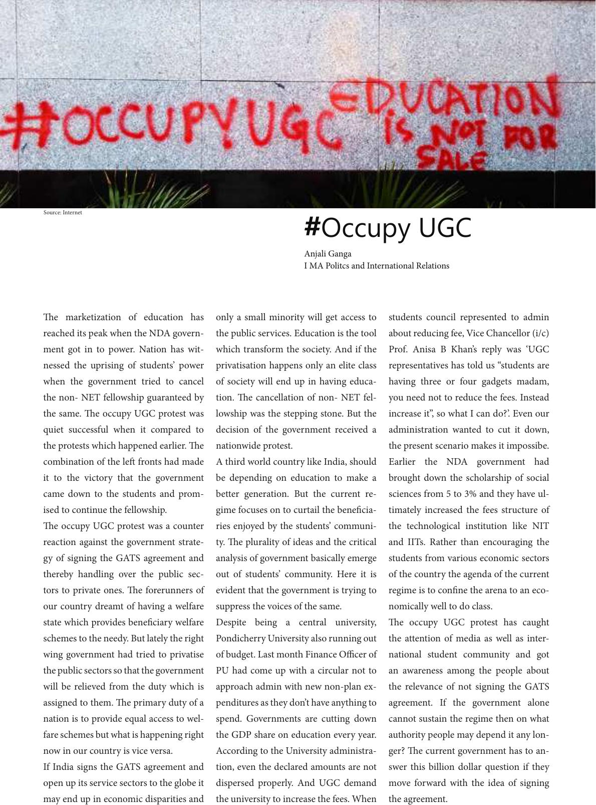

#Occupy UGC
e marketization of education has
reached its peak when the NDA govern-
ment got in to power. Nation has wit-
nessed the uprising of students’ power
when the government tried to cancel
the non- NET fellowship guaranteed by
the same. e occupy UGC protest was
quiet successful when it compared to
the protests which happened earlier. e
combination of the le fronts had made
it to the victory that the government
came down to the students and prom-
ised to continue the fellowship.
e occupy UGC protest was a counter
reaction against the government strate-
gy of signing the GATS agreement and
thereby handling over the public sec-
tors to private ones. e forerunners of
our country dreamt of having a welfare
state which provides beneciary welfare
schemes to the needy. But lately the right
wing government had tried to privatise
the public sectors so that the government
will be relieved from the duty which is
assigned to them. e primary duty of a
nation is to provide equal access to wel-
fare schemes but what is happening right
now in our country is vice versa.
If India signs the GATS agreement and
open up its service sectors to the globe it
may end up in economic disparities and
only a small minority will get access to
the public services. Education is the tool
which transform the society. And if the
privatisation happens only an elite class
of society will end up in having educa-
tion. e cancellation of non- NET fel-
lowship was the stepping stone. But the
decision of the government received a
nationwide protest.
A third world country like India, should
be depending on education to make a
better generation. But the current re-
gime focuses on to curtail the benecia-
ries enjoyed by the students’ communi-
ty. e plurality of ideas and the critical
analysis of government basically emerge
out of students’ community. Here it is
evident that the government is trying to
suppress the voices of the same.
Despite being a central university,
Pondicherry University also running out
of budget. Last month Finance Ocer of
PU had come up with a circular not to
approach admin with new non-plan ex-
penditures as they don’t have anything to
spend. Governments are cutting down
the GDP share on education every year.
According to the University administra-
tion, even the declared amounts are not
dispersed properly. And UGC demand
the university to increase the fees. When
students council represented to admin
about reducing fee, Vice Chancellor (i/c)
Prof. Anisa B Khan’s reply was ‘UGC
representatives has told us “students are
having three or four gadgets madam,
you need not to reduce the fees. Instead
increase it”, so what I can do?’. Even our
administration wanted to cut it down,
the present scenario makes it impossibe.
Earlier the NDA government had
brought down the scholarship of social
sciences from 5 to 3% and they have ul-
timately increased the fees structure of
the technological institution like NIT
and IITs. Rather than encouraging the
students from various economic sectors
of the country the agenda of the current
regime is to conne the arena to an eco-
nomically well to do class.
e occupy UGC protest has caught
the attention of media as well as inter-
national student community and got
an awareness among the people about
the relevance of not signing the GATS
agreement. If the government alone
cannot sustain the regime then on what
authority people may depend it any lon-
ger? e current government has to an-
swer this billion dollar question if they
move forward with the idea of signing
the agreement.
Anjali Ganga
I MA Politcs and International Relations
Source: Internet